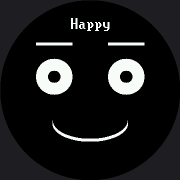

Standalone main.py¶
This is the program that turns your kit into a device. Rename it to main.py, copy it to the
root of the board's filesystem, and MicroPython runs it a few seconds after power arrives — no
computer, no Thonny, just USB power or a battery.
Cut the cord
 Up to now every program has needed a laptop attached. After this one, your robot face wakes up on its own and starts feeling things. Great expression!
Up to now every program has needed a laptop attached. After this one, your robot face wakes up on its own and starts feeling things. Great expression!
What It Does¶
It combines everything from the labs so far into one program that works whether or not anybody is touching it:
| Behavior | How it works |
|---|---|
| Cycles through ten modes on its own | The seven emotions, plus Blink, Wink, and Sleepy |
| Advances every 5 seconds with no input | AUTO_ADVANCE_MS |
| Holds the animated modes longer | REPEATING_HOLD_MS — 10 seconds for Blink and Wink |
| Replays animations while they are up | REPEAT_MS — every 3 seconds |
| Lets you drive it by hand | Button A forward, button B back |
| Gets out of your way when you do | Any press pushes the next auto-advance out to 30 seconds |
That last row is a small piece of interface design worth noticing. A demo that keeps advancing while somebody is trying to look at it is annoying; one that never advances again is a demo nobody sees. Thirty seconds is the compromise — the same compromise as on the 1.2" kit, because none of these numbers are pixel counts. Screen size changed; human patience didn't.
Two Fonts, Because Bitmaps Don't Scale¶
This file names two different font modules, and the choice isn't arbitrary. FONT =
config.SMALL_FONT (8×16) draws the drifting Zzz in Sleepy mode, and LABEL_FONT =
config.BIG_FONT (16×32) draws the mode's name through centered(). Bitmap glyphs are fixed-size
images baked into lib/ — they didn't get bigger just because the screen grew from 240×240 to
360×360. Every coordinate in this file grew by 1.5; the letters didn't. The mode name is the
headline of the whole demo, so it gets the bigger font: "Surprised," the longest of the ten mode
names, comes out to 144 px, comfortably inside the roughly 199 px the safe circle gives you at
LABEL_Y. The Zzz stays in the small font because it's decoration, not a title.
def centered(name, y=LABEL_Y):
# LABEL_FONT.WIDTH is 16 here, not 8 -- read the real width off the
# font module and this arithmetic cannot drift out of step with it.
x = HALF_WIDTH - (len(name) * LABEL_FONT.WIDTH) // 2
display.text(LABEL_FONT, name, x, y, WHITE, BLACK)
That same LABEL_Y sits at 32 here, not the naively-scaled 45 (30 × 1.5) — at 45, the label's
now-32-row-tall background band would paint straight over the top of Afraid's raised eyebrow.
Whichever of the ten modes you land on, the label clears every eyebrow in the kit by exactly one
row.
One Screen, Two Kinds of Text
 My glyphs are bitmaps — fixed size, no matter how big my screen gets. That's why the mode name up top uses the bold 16×32 font while the little drifting Zzz stays in the smaller one: a title needs to read from across the room, and decoration doesn't.
My glyphs are bitmaps — fixed size, no matter how big my screen gets. That's why the mode name up top uses the bold 16×32 font while the little drifting Zzz stays in the smaller one: a title needs to read from across the room, and decoration doesn't.
Two Rules It Follows Religiously¶
Both rules come from earlier labs, and both matter more here than anywhere else, because this program runs forever.
A full display.fill(BLACK) happens only when the mode changes — a few times a minute. On
this 360×360 panel that is 129,600 pixels, 259,200 bytes down the SPI wire. A few times a minute,
that's still cheap enough to be invisible.
The animations that repeat inside a mode redraw only their own box. Wipe the whole screen three times a second on this display and the demo becomes a strobe light.
def enter_mode(index):
"""Called once, when a mode becomes the current one. This is the only
place a full display.fill(BLACK) happens."""
def replay_mode(index):
"""Called every REPEAT_MS while an animated mode is up. Touches only
the boxes that move, never the whole screen."""
Those two docstrings are the architecture of the whole program.
The Mode Table Carries Timing Too¶
The animated modes get a five-column row, because they need to describe motion as well as appearance:
# Name, the function that lays down the mode's static picture, the
# function that plays its animation, how long the mode stays on screen,
# and how often it replays itself while it is up.
ANIMATED_MODES = (
("Blink", enter_blink, play_blink, REPEATING_HOLD_MS, REPEAT_MS),
("Wink", enter_blink, play_wink, REPEATING_HOLD_MS, REPEAT_MS),
("Sleepy", enter_sleepy, play_sleepy, AUTO_ADVANCE_MS, REPEAT_MS),
)
Blink and Wink share an enter function and differ only in how they play, which is exactly the
kind of reuse a table makes visible.
Here's one frame from the reel:

One Line You Should Not Delete¶
# Give Thonny a window to interrupt (Stop/Restart) before main.py's loop
# takes over the serial port -- without this, a fast-booting board can
# start running before you get a chance to break in.
sleep(1)
Once this file is main.py, it starts running the moment the board powers up — including the
moment it powers up because you just plugged it into your computer. Without that one-second
pause, a fast-booting board can grab the serial port before Thonny gets a chance to break in, and
getting your board back becomes an adventure.
Rename the Copy, Not the Original
 Upload
Upload 21-sample-main-demo.py and rename the copy on the board to main.py. Keep the numbered original in your project folder so you can always go back to a version you know works.
Things to Try¶
- Make it yours. Change the mode order, drop the emotions you do not like, and adjust
AUTO_ADVANCE_MSuntil the pacing feels right for the room it will sit in. - Add your own expression to the table once you have finished the Design Your Own Emotion lab. One row.
- Power it from a battery and put it somewhere people walk past. Watch which expressions make strangers stop, and which they ignore.
- Break it on purpose and recover. Put an error in your
main.py, upload it, and practice getting back in with Thonny's Stop/Restart. Do this once now rather than during a demo.
References¶
- Demo Reel — the simpler, button-free version of the same idea
- Don't Block the Loop — the
ticks_ms()pattern that lets timers and buttons share one loop - Sleeping Face — the Sleepy mode's drifting Zzz, in its own lab
- Standalone main.py on the 1.2" kit — the same program at 240×240, with both the mode name and the Zzz drawn in the same 8×16 font